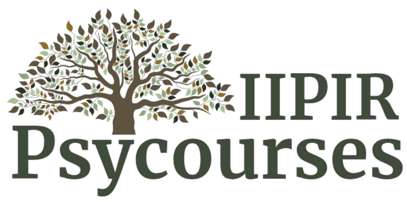

Оплату успішно отримано
Дякуємо за покупку!
Перші клієнти на прийомі у психолога: що робити, якщо складно?
Ви успішно придбали відеокурс. Натисніть кнопку нижче, щоб перейти до Telegram, де ви отримаєте доступ до матеріалів курсу.
Якщо виникли питання щодо доступу — напишіть нам: psycourses_iipir